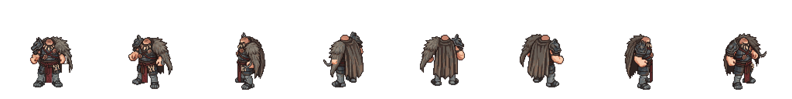

Juggernaut — จากชุด 8 ทิศที่แนบล่าสุด
ต้นฉบับรายละเอียดชุด:

ดูจังหวะแขนสวนขา การงอศอก และช่วงเท้ารับน้ำหนัก เทียบกับภาพที่คุณส่งมา ฝั่งซ้ายใช้ภาพสะท้อนโดยตรง ภาพท่าเดินสร้างด้วย ImageGen จากภาพชุด 8 ทิศที่แนบล่าสุด โดยใช้ภาพเดินเป็นตัวอย่างจังหวะ ยังรอคุณตรวจ ก่อนทำอีก 7 อาชีพ
ต้นแบบที่คุณส่ง · 20 เฟรม
Juggernaut · มือเปล่า · 20 เฟรม
เล่นเทียบที่รอบละ 0.8 วินาทีเพื่อการตรวจเท่านั้น ไฟล์ต้นแบบไม่มีข้อมูลเวลา จึงยังรับรองความเร็วเดิมไม่ได้ ใช้ 20 เฟรมแรกของต้นแบบ ส่วนช่องสุดท้ายเป็นท่ากลับ การเทียบจังหวะเริ่มต้นอาจคลาดกันได้
ขยายด้วย nearest-neighbor และจัดแนวพื้นเดียวกัน ตัวอย่าง Juggernaut แสดงชุดไม่มีหัว เพื่อให้ตรวจการเดินได้ชัด ใช้ภาพชุดเป็นต้นฉบับดีไซน์ และภาพเดินเป็นตัวอย่างการเคลื่อนไหวให้ ImageGen ตามคำขอรอบนี้
ดาวน์โหลดภาพจาก ImageGen · ดาวน์โหลด Sprite ตัวทดลอง · ดาวน์โหลด GIF